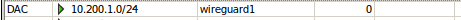

1.2 Túneles (protocolo VPN WireGuard)
1. VPN de router a router utilizando MikroTik y Wireguard
En esta capítulo se va a implementar una VPN (tipo router a router) entre dos sedes de una empresa mediante un túnel implementado con WireGuard (tecnología asimétrica).
WireGuard VPN es una aplicación gratuita que permite establecer túneles VPN incorporando todos los protocolos de comunicación y criptografía necesarios, para establecer una red privada virtual entre varios clientes y un servidor.
WireGuard proporciona mejor rendimiento que el protocolo IPsec y que OpenVPN (tanto en velocidad como en latencia de las conexiones), por lo que actualmente se le considera como una de las mejores VPN del momento.
Entre sus características más importantes:
- Protocolo VPN de software libre.
- Más rápida que IPSec y OpenVPN.
- Sencillez.
- Utiliza cifrado de última generación, como el marco del protocolo Noise, Curve25519, ChaCha20, Poly1305, BLAKE2, SipHash24, HKDF.
2. Escenario y esquema de red
2.1 Sede donde se encuentra el servidor Wireguard - Sede Principal
Se tiene un equipo Mikrotik en la sede princiapl TeuIT con ip pública 45.155.48.16 (45.155.48.16:28291). El nombre del equipo es Server_Wireguard_TeuIT. Este equipo hará las veces de servidor Wireguard.
La dirección de la red LAN del mikoritk es 192.168.88.0/24. En la red LAN del mikrotik, se tiene configurado/instalado un teléfono IP.

2.2 Centro educativo - Sede remota
Se tiene un equipo Mikrotik en la sede remota. El esquema de sedes es el siguiente.
El esquema de red ampliado del Centro Educativo, es el siguiente:
3. Trabajo a realizar en la sede principal - Servidor Wireguard
En primer lugar, vamos a comenzar con las configuraciones en el equipo ubicado en la sede TeuIT (sede principal) y que hará las veces de servidor Wireguard.
Las configuraciones a realizar, se describen a continuación.
1. Crear una interfaz Wireguard
Hay que acceder al Menú Wireguard y pulsar en + para crear una nueva interfaz, donde:
- Name: Se le pone como nombre wireguard1.
- Listen Port: Se le pone el puerto 13231 y es donde estará a la escucha.
- Public y Private Key: A pulsar Ok, se crean las claves pública y privada. La clave pública hay que anotarla ya que será las que se distribuya a las sedes remotas para configurar la conexión en el otro extremo (cliente wireguard en sede remota).
2. Acceso en capa 3 entre dispositivos
Una vez creada la interfaz, para tener acceso en capa 3 entre los 2 dispositivos, lo que se hará es anotar una ip en un extremo y el otro para tener interconexión. Por lo tanto, hay que crear una dirección asociada a la interfaz Wireguard que hemos creado con anterioridad. Como ejemplo, se establece la dirección de red 10.200.1.0/24 para establecer direcciones en los extremos de los túneles.
Seleccionamos la primera dirección de esa subred para el servidor wireguard, que para este caso será: 10.200.1.1/24 y que define la dirección para el punto del túnel en este Mikrotik.
Por último, decir que se ha creado de manera automática una regla de encaminamiento para que el tráfico que se genere sobre la ip 10.200.1.0/24 se transfiera por la interfaz wireguard1.

Por el momento, esta es la configuración inicial en este extremo. Una vez realicemos la configuración en el otro extremo (sede remota), volveremos al equipo de esta sede para finalizar la configuración (apartado 5).
4. Trabajo a realizar en la sede remota - Centro Educativo
1. Crear interfaz wireguard
En primer lugar, hay que acceder al Menú Wireguard y pulsar en + para crear una nueva interfaz, donde:
- Name: Se pone el nombre de la inerfaz que para este caso es wireguard_CEducativo.
- MTU: Se deja por defecto 1420.
- Listen port: Se pone el puerto que se utilizará para establecer la conexión, para este caso,13231.
- Commnet: Ponemos como comentario 'Tunel VPN: Client to Server'.
Al pulsar Ok, se crean las claves públicas y privadas para esta interfaz. La clave pública, la necesitaremos para configurar la conexión en el otro extremo (sede principal). El resultado es el siguiente:
A continuación, hay que crear un Peer donde,
- Interface: Hay que poner la que acabamos de crear, que para este caso es wireguard_CEducativo.
- Public key: Clave pública del servidor wireguard (sede principal), que para este caso se llama wireguard1.
- Endpoint: Se le indica la ip (uno de los extremos ha de tener la información del otro punto del túnel) del router físico que para este caso es: 45.155.48.16.
- Endpoint Port: Puerto a la escucha configurado en la sede principal (servidor wireguard), que para este caso es 13231.
- Allowed Address: Ponemos 0.0.0.0/0 (desde cualquier ip valdría) aunque se podría poner 45.155.48.16 para permitir solo esa.
Al pulsar OK, el resultado es el siguiente:
A continuación, hay que crear una dirección ip. Para este caso, se crea la 10.200.1.5/24 y se asigna a la interfaz wireguard_Ceducativo.
Para este caso se le asigna la ip 10.200.1.5, ya que la 10.200.1.1, 10.200.1.2, 10.200.1.3 y 10.200.1.4 están siendo usadas por otras sedes remotas.
2. Crear reglas
El siguiente paso es crea una regla que enmascare (masquerade) todo el tráfico que vaya hacia la red 10.200.1.0/24 para que sepa volver.
5. Añadir peer de CEducativo en el servidor Wireguard y crear reglas
1. Añadir Peer de sede remota
En este punto, volvemos la mikrotik de la sede principal para finalizar con la configuración del túnel, es decir, hay que añadir el enlace entre la sede remota y principal, y para ello, añadimos un nuevo Peer con la clave pública y el puerto 13231 configurado en el otro extremo (sede remota Centro Educativo), donde:
- Interface: Se pone el nombre del servidor wireguard que para este caso es wireguard1.
- Public Key: Clave pública de la sede remota (Centro educativo).
- Endpoint Port: Puerto configurado en la sede remota (Centro educativo).
- Allowed Address: Ponemos 0.0.0.0/0 (desde cualquier ip valdría).
Como se puede observar en la figura superior, ya se han interconectado hace 3 segundos (Handshake). Esto nos permitirá validar que la conexión se ha establecido correctamente.
2. Crear reglas en mikrotik sede principal - Servidor Wireguard
El siguiente paso es crear una regla que permita el tráfico de entrada udp en el puerto 13231 en la interfaz de entrada (puerto wan del router).
6. Comprobaciones extremo a extremo Wireguard
Desde el mikrotik de la sede remota (Centro educativo) se hace un ping al mikrotik de la sede principal TeuIT cuya dirección wireguard es 10.200.1.1 y se comprueba que contesta.
Otra opción es abrir la interfaz del wireguard y ver la gráfica/tabla de tráfico.
7. Acceso a dispositivos en la sede Principal desde la sede Remota
En la red TeuIT, se tiene un teléfono ip en la dirección 192.168.88.253, a la que se desea que los equipos del centro educativo se puedan conectar. Para ello, en el router de la sede remota (Centro educativo), hay que crear una regla de encaminamiento para que el tráfico que se genere sobre la ip 192.168.88.253 se transfiera por la interfaz Wireguard. Para ello, se accede al menú Ip > Routes y se configura con los siguientes datos:
- En el Dst. Address, se pone la dirección de red donde se encuentra el teléfono ip y que para este caso es: 192.168.88.0/24.
- En el gateway, se pone la dirección ip del otro extremo del wireguard, es decir, la ip del wireguard de la sede principal (servidor Wireguard).
- Distance 1, scope 30, target scope 10 y routing table main.
Pulsamos Ok, para guardar.
La regla de encaminamiento para acceder al direccionamiento de la red VPN, tendrá como Gateway la interfaz wireguard (ver imagen inferior).
El resultado de crear las reglas de encaminamiento, es el siguiente:
A continuación, hay que crear una regla de enmascaramiento para que esos paquetes que pasen por esta ruta, 192.168.88.0/24, sepan volver.
7.1 Comprobaciones
Si se hace un ping desde un equipo de la red de dirección por ejemplo a la ip del teléfono ip 192.168.88.253, contesta:
Si se hace un ping desde un equipo de la VLAN del aula 1, también contesta:
Con un trace, podemos comprobar los saltos que hace el paquete, como se observa en la imagen inferior, los paquetes se encaminan por el túnel VPN (10.200.1.1).
7.2 Acceso al teléfono IP
Mediante el appliance Firefox 31.1.1~2 que se ha instalado previamente y configurado en la interfaz Gi1/1 en la vlan 5 (profesorado), vemos que se accede a la ip del dispositivo en la red TeuIT.

Todos los usuarios de la red (alumnado, profesorado, etcétera), tienen acceso al servidor VPN con Wireguard que se ha creado, por lo que podrían acceder a los servicios que estén en el otro extremo, ejemplo, el teléfono ip, servidor web, etcétera.
¿Cómo podemos evitar que eso pase?
Imaginemos que en el otro extremo de la VPN hay un servidor con unos servicios donde sólo los del equipo de dirección pueden tener acceso al mismo. Opciones:
- Una de las opciones es utilizar reglas de firewall para decir qué equipos/usuarios pueden pasar y cuales no.
- Otra opción es el uso de marcas de ruta.
Si observamos la tabla de rutas del mikrotik (imagen superior), hay una ruta que dice que todo paquete a la red privada 192.168.88.0/24 (donde está el servidor de acceso al equipo de dirección), se enruta por la 10.200.1.1 que es la ip de la VPN en el otro extremo (servidor Wireguard). Como se puede observar, esta ruta está en la tabla de rutas principal por lo que todo el mundo puede ver esta ruta.
Lo que vamos hacer es crearnos un routing tables (menú Routing → Tables) y creamos uno nuevo al que le llamaremos filtrado_solo_Direccion.
A continuación, accedemos a Route list y le decimos a la ruta 192.168.88.0 que su tabla no es la main sino la que se acaba de crear. Con esto le decimos, que queremos que hasta aquí lleguen.
A continuación, en Ip → firewall → Mangle, vamos a marcar ciertas conexiones/paquetes para que cumplan lo que nosotros queramos en la tabla de rutas.
donde se han configurado los siguientes parámetros:
- Chain: prerouting (antes de enrutarlo se marca).
- Dst.Address: 192.168.88.253.
- Src.Address List: direccion.
- Action: mark routing.
- New routing mark: filtrado_solo_Direccion.
Con esto conseguimos que todo paquete que venga desde la Address List direccion y vaya encaminado hasta la ip 192.168.88.253 (servidor del otro extremo de la VPN) lo que hacemos es marcar la ruta y marcada como filtrado_solo_direccion, de forma que, le hemos dicho, cada paquete que venga de direccion y vaya destinado a la ip 192.168.88.253, tendrá una marca de ruta. Eso implica que ese paquete irá a ver las rutas y solo verá de la tabla de rutas, las rutas que tengan su routing table, para este caso, será donde aparezca filtrado_solo_Dirección.
Por lo tanto, los paquetes que no vengan de direccion, como vendran con routing table main, no tendrán ninguna ruta para poder llegar a la ip 192.168.88.253 y por lo tanto no sería accesible.
Si accedemos desde un equipo del aula 2 por ejemplo, no se tiene acceso al servidor que está en la ip 192.168.88.253, pero si llegamos con pin al otro extremo de la VPN (10.200.1.1).
Tampoco se tendría acceso desde el propio mikrotik ya que sale como tabla de ruta main.
Si accedemos con un equipo de dirección (ejemplo el equipo Kali), sí podremos llegar al servidor.
Desde el PC del director/a también se podría.
Desde un equipo de alumno del aula 2, tampoco se podría.
7.3 Comprobaciones en el servidor wireguard (sede central)
Comprobamos en el servidor VPN (Mikrotik TeuIT) la conexión con el mikrotik de la sede remota (Centro educativo, RX Y TX y last handshake).
8. Vídeotutorial de puesta en producción de un escenario entre 2 sedes
En el siguiente vídeo, se describe un escenario de ejemplo para simular la conexión entre 2 routers (1 físico y otro virtualizado) mediante el protocolo Wireguard.
Obra publicada con Licencia Creative Commons Reconocimiento No comercial Compartir igual 4.0